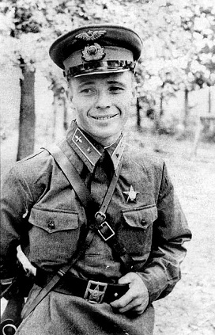

Виктор Васильевич Талалихин
Родился 18 сентября 1918 года в селе Тепловка Терсинской волости Вольского уезда Саратовской губернии в русской рабочей семье.
Окончил школу-семилетку в Вольске в 1933 году. Вместе с родителями в 1933 году приехал в Москву и начал работать на Московском мясокомбинате.
В 1934—1937 годах учился в фабрично-заводском училище при мясокомбинате, получил специальность «колбасник».
В Красной армии с января 1938 года. В 1938 году окончил Борисоглебскую военную авиационную школу лётчиков в городе Борисоглебск
Воронежской области и получил звание младшего лейтенанта. С июля 1938 году служил в 27-м истребительном авиационном полку ВВС Московского военного округа
младшим лётчиком и помощником штурмана эскадрильи. Военную присягу принял 23 февраля 1939 года. Участвовал в советско-финляндской войне (1939—1940).
Воевал в составе 68-го истребительного авиаполка, в январе 1940 года переведён в 152-й иап.
Согласно биографии «Виктор Талалихин», написанной С. Г. Утехиным в 1960-х годах, на биплане И-153 «Чайка» совершил 47 боевых вылетов,
Перед Великой Отечественной войной жил в городе Клин Московской области, продолжал службу в 27-м истребительном авиаполку.
В боях Великой Отечественной войны с июня 1941 года. В июле 1941 года повышен в должности до заместителя командира авиаэскадрильи
с переводом в 177-й истребительный авиаполк ПВО. Воевал на истребителях И-16 и МиГ-3.
В ночь на 7 августа 1941 года на И-16 тип 29 одним из первых военных лётчиков РККА произвёл таран в ночном воздушном бою
над Москвой в Великой Отечественной войне, сбив в небе Москвы бомбардировщик He-111 лейтенанта И. Ташнера
из состава 7-й эскадрильи 26-й бомбардировочной эскадры. Самолёт Талалихина упал в лес вблизи деревни Степыгино
(ныне — городской округ Домодедово), а сам раненый лётчик на парашюте спустился в речку Северку. В бою также выжил пилот He-111 Р. Шик
В. В. Талалихин погиб в воздушном бою около Подольска 27 октября 1941 года. Был похоронен в колумбарии
Донского кладбища, в 1959 году при организации памятника «Герои Московской битвы» прах был перенесён
и захоронен на Новодевичьем кладбище в Москве. В 1948 году зачислен навечно в 1-ю эскадрилью 177-го истребительного авиаполка
Брат Героя — старший лейтенант Николай Талалихин — воевал в должности командира звена
в 118-м морском ближнеразведывательном авиационном полку ВВС Северного флота и 11 июля 1941 года не вернулся из боевого вылета.
В 2000-х годах было найдено место падения сбитого немецким истребителем гидросамолёта ГСТ, внутри разбитой машины обнаружены останки двух членов экипажа.
Один из них был идентифицирован как Н. Талалихин и захоронен с воинскими почестями в 2020 году в Мурманской области на мемориальном комплексе Долина Славы
Так как известный летчик, герой Советского Союза Виктор Талалихин именно здесь, в небе над деревней Мансурово
в годы Великой Отечественной войны впервые совершил ночной таран немецкого самолета-бомбардировщика, с именем Талалихина связано сразу несколько мест в Домодедове:
село Степыгино, где установлен монумент в его честь, деревня Мансурово, где упал его самолет, село Красный Путь,
в котором работает музей боевой авиации его имени. Также в честь Талалихина названа одна из улиц города, которая начинается от Каширского шоссе.
Сейчас на ней расположена школа № 7 и хоровая школа имени И. Д. Павловой.
Память о Талалихине хранят многие населенные пункты в России.
Его именем названо село в Чеховском городском округе, улицы в его родном городе Вольске, а также в Москве, Санкт-Петербурге, Подольске, Челябинске, Краснодаре, Владивостоке, Калининграде и других.
https://ru.wikipedia.org/wiki/Талалихин,_Виктор_Васильевич, https://domodedovoriamo.ru/article/ne-tolko-aviatory-v-chest-kogo-nazvany-ulitsy-domodedova-539039